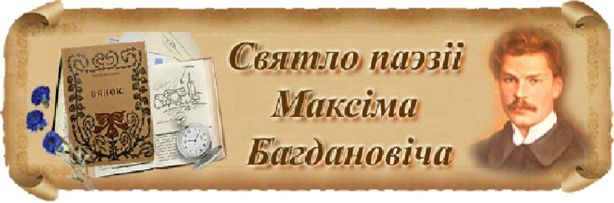

Вобраз Максіма Багдановіча у лірычных творах

Ніхай памятае, што чужынцы, угледаючыся на яго, будуць судзіць аб усім народзе.
Дык ніхай беларус на чужыні годна і паважна прэдстаўляе сваю нацыю
Гэтыя словы самаго Максiма Багдановiча ясна адлюстроўваюць яго адносiны да жыцця. Сапраўдны патрыёт, якi вечна будзе жыць у сэрцы мноства iншых аўтараў Беларусi. И пра яго, гэтага сапраўды вялiкага Беларускага лiтэратара мы i жадаем вам расказаць.
Што нас спадвiгла на вывучэнне гэтага пытання? Гэтага мы дакладна не ведаем i самi. Мы палiчылi, что пошук i сыстэматызацыя iнфармацыi пра аднаго з найбольш знакамiтых, i адначасова недаацэненых лiтэратараў мiнуўшага стагоддзя, якi пражыушы толькi дваццаць пяць гадоў стау адным з найбольш узнаваемых пiсьменнiкаў Беларусi, якому прысвечваюць свае творы мноства iншых аутараў.